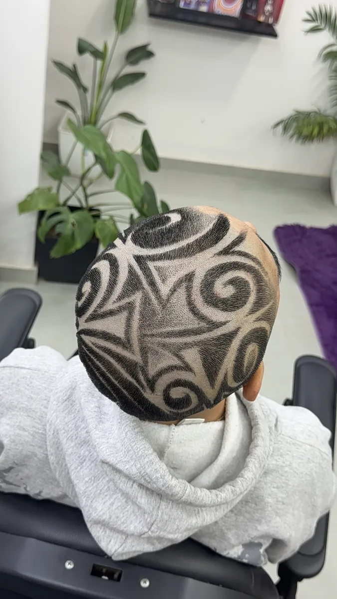
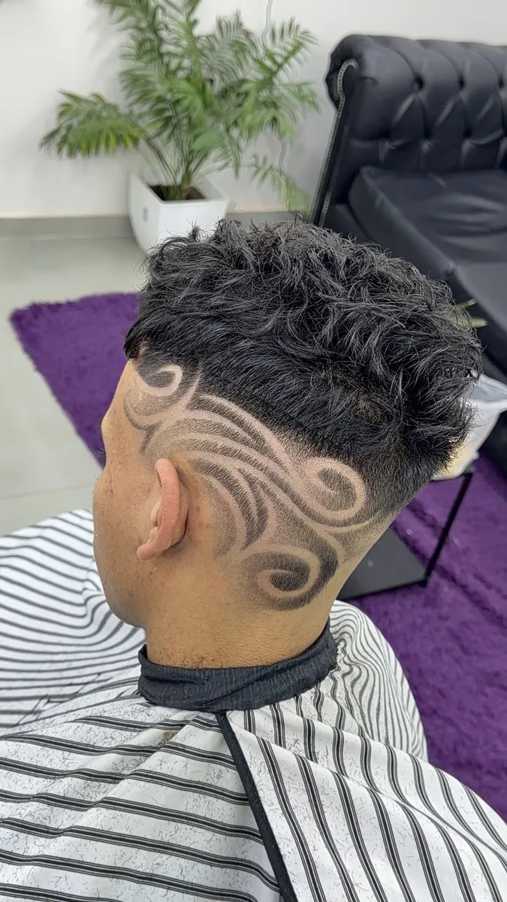
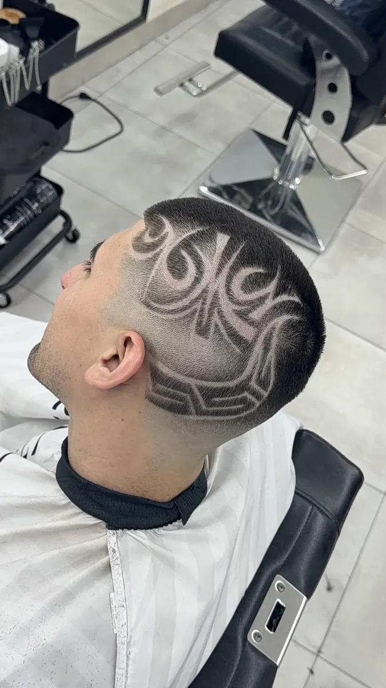
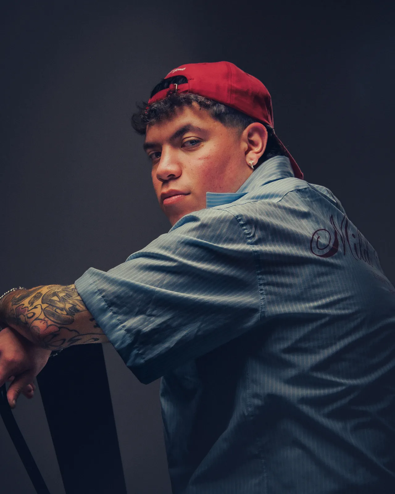
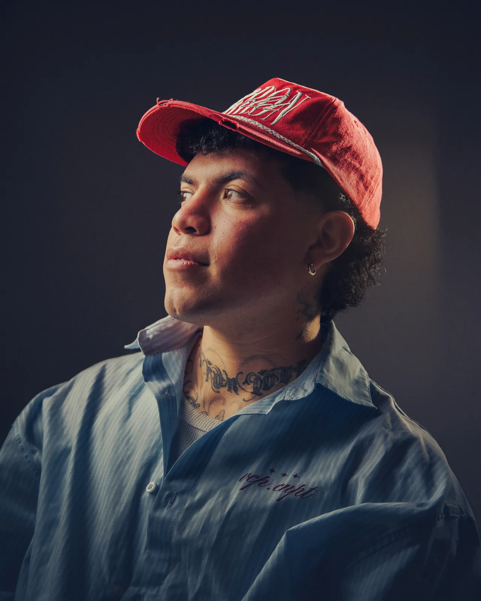
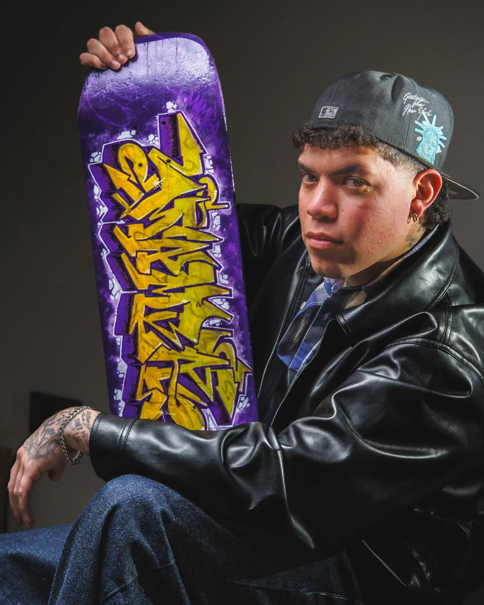

Un método replicable e infinito
Para que puedas crear diseños saloneros, para redes o para competir. La creatividad no es un don: es una habilidad que se entrena.

Curso online · Método ARTE EN LÍNEAS
Un método para crear tus propios diseños infinitamente. Sin pigmento ni edición: solo pelo, limpieza de trazo y técnica.
Quiero aprender el método¿Qué vas a aprender?
Este curso te da un MÉTODO: un sistema para que puedas crear tus propios diseños infinitamente, sin repetirte ni que se vean parecidos.
La creatividad es un músculo y muchos todavía no lo entrenan. Por eso vas a recibir ejercicios para practicar y crear diseños sin necesidad de tener modelos reales.
Si ya hacés diseños y querés mejorarlos o llegar a buenos resultados sin pigmentación, también estás en el lugar correcto: vas a tener clases grabadas sobre modelos reales, con técnicas y recursos que van a llevar tus diseños a otro nivel.
El método “ARTE EN LÍNEAS” se aprende en papel y se plasma en el cabello.
Entra un barbero bloqueado, sale un artista en líneas.
Lo que te llevás
Para que puedas crear diseños saloneros, para redes o para competir. La creatividad no es un don: es una habilidad que se entrena.
Más de 8 h de contenido grabado, más de 4 modelos distintos y material en PDF. Acceso de por vida: entrás cuando querés y lo volvés a ver.
Vas a lograr diseños como los que ves en redes sin necesidad de tinte, usando solo el pelo.
Este curso es para vos si…
Importante: el curso no enseña a cortar. Es para barberos que ya manejan las herramientas y quieren llevar sus cortes al lado artístico.
Galería









¿Quién soy?
Artista, barbero y educador, fundador de Mamba Barber Studio. Llevo 3 años creando y mostrando mis diseños en redes, y nunca encontré dónde capacitarme para aprender más sobre el tema.
Yo también pensaba que no tenía creatividad. Pero en 2025 creé un sistema que permite crear diseños infinitos, de distintos tipos y tamaños: el mismo que usaba para hacer los míos, pero ordenado y mejorado. Mientras lo aplicaba, lo enseñaba, y los resultados mejoraron en todo sentido.
Ahora creé este curso para que aprendas el sistema que me ayudó a llevar mi freestyle y el de muchos colegas a OTRO NIVEL, y las técnicas que me permiten lograr mis resultados AL NATURAL.
Lo que te frena
El tiempo de práctica es importante, pero lo que trae resultados es aprender esto de manera completa y ordenada.
La práctica te hace mejorar día a día, pero ¿cómo esperás mejorar si todavía no aprendiste un sistema de técnicas para hacerlos?
El impacto de un diseño está en cómo combinás las técnicas. Un buen diseño es llamativo hasta con la cámara de más baja resolución.
Gané mucha plata haciendo diseños para ocasiones especiales de mis clientes, capacitando colegas y mostrándome en redes. Es un arte muy valorado.
Vas a aprender más que en una clase presencial, con más horas de contenido y a un costo más accesible. Y la explicación es la misma.
Gran parte del curso está dedicada a que trabajes bien con cada herramienta, para lograr trazos limpios y resolver los errores típicos al hacer un diseño.
Preguntas frecuentes
Sí. Comprando el curso tenés acceso de por vida. Podés volver a verlo cuando quieras, desde donde quieras.
No. Lo más importante para lograr un buen diseño es la técnica: no es la flecha, es el indio. En el curso está todo lo que necesitás para llegar a los resultados que querés.
No. El curso tiene 12 clases: solo 4 son teóricas en papel, y el resto son en modelos reales.
Te va a ayudar a crear y/o mejorar tu freestyle para que puedas mostrarlo en redes, ser “el barbero de los diseños” y que la gente reconozca tus trabajos con solo verlos.
Sí. Con el método vas a poder crear diseños saloneros, para redes o para competir, rápido y fácil. Además, siempre hay clientes que lo piden.
No. Mis diseños no necesitan pigmento ni edición, porque enfoco el trabajo en la limpieza de cada trazo y en el uso correcto de las herramientas en cada técnica.
El curso tiene material teórico y demostrativo, digital y en cabello. Cada modelo grabado responde a problemas distintos, y vas a tener ejercicios para practicar mientras estudiás.
El curso te queda para siempre: podés entrar a resolver tus dudas cuando quieras, y también estoy a tu disposición por DM de Instagram para ayudarte.
No necesariamente. Si sos de Argentina, podés abonar con tu dinero en cuenta de MercadoPago en un instante.
Una vez abonado, el acceso es inmediato. Te llega una invitación a tu mail y listo, ya podés empezar (revisá spam y promociones).
Siempre hay dos personas que se van a copar para un diseño: el que tiene el pelo corto y le crece rápido, y al que le gusta hacerse locuras en la cabeza. Con cualquiera de ellos podés crear muchas piezas distintas. Yo repito los mismos 2 o 3 modelos siempre.
Freestyle al natural